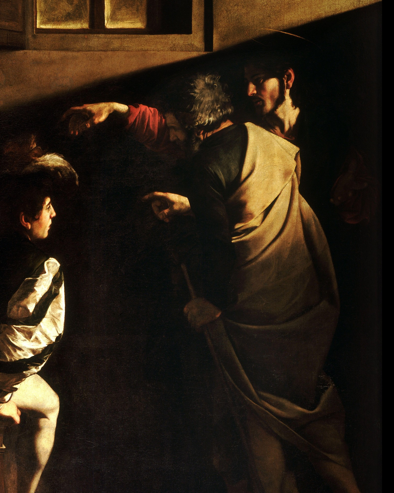
Four centuries later, historians still can't agree.
Swipe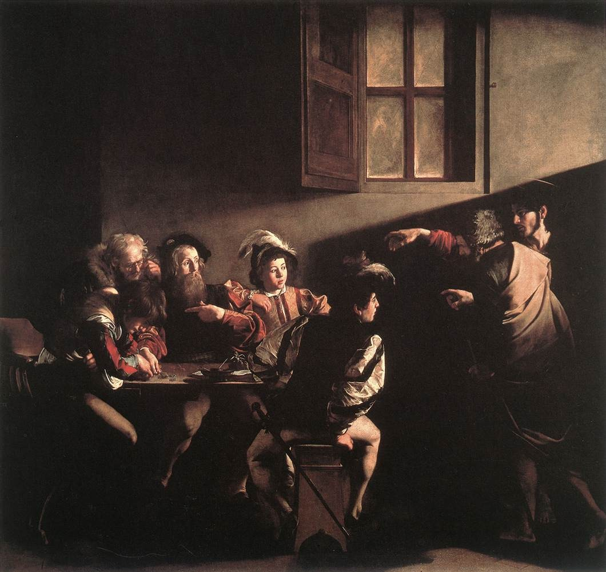
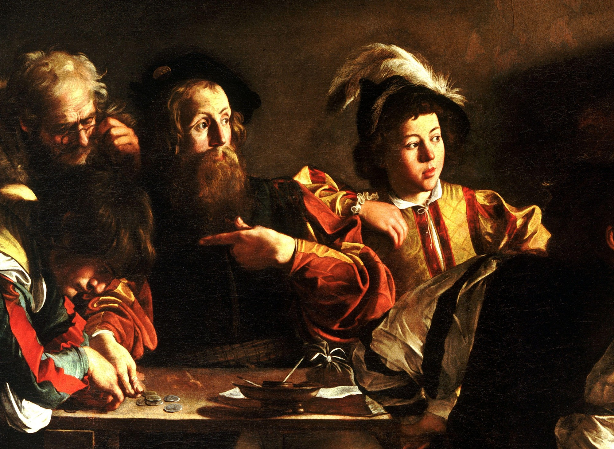
The Gospel says Jesus found Matthew collecting taxes. Caravaggio moved it to his own streets: feathered caps, slashed sleeves, a sword at the hip. No halos. Just coins on the table.
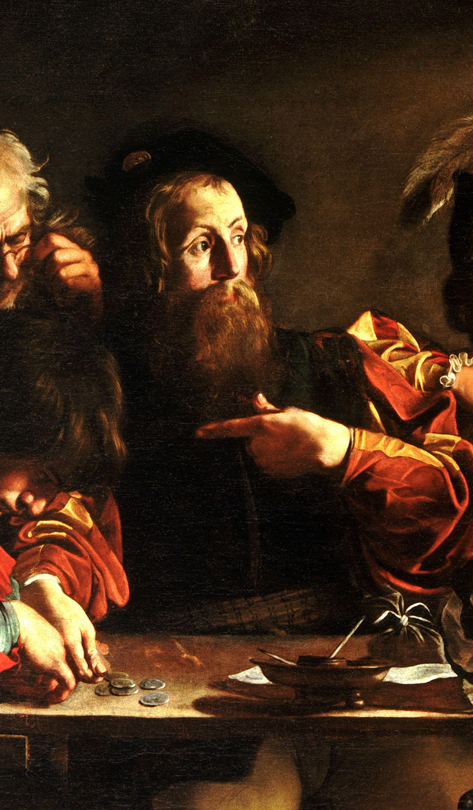
Me?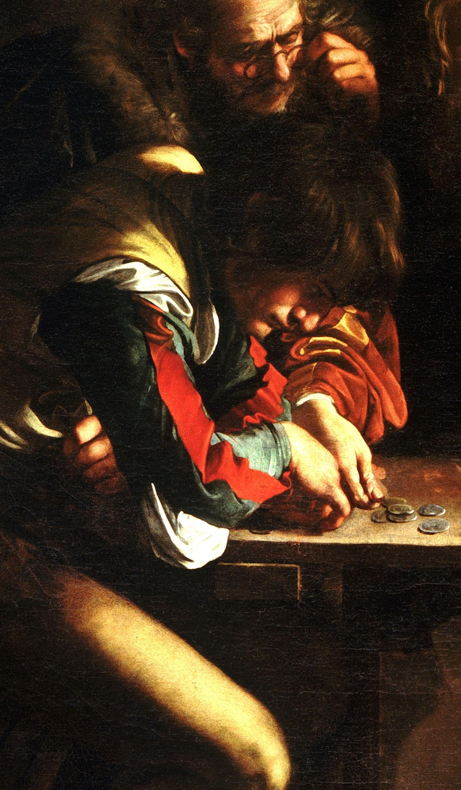
Him?Most historians say Matthew is the bearded man, pointing at his own chest. But since the 1980s, a few scholars argue he's pointing at the boy who won't look up.
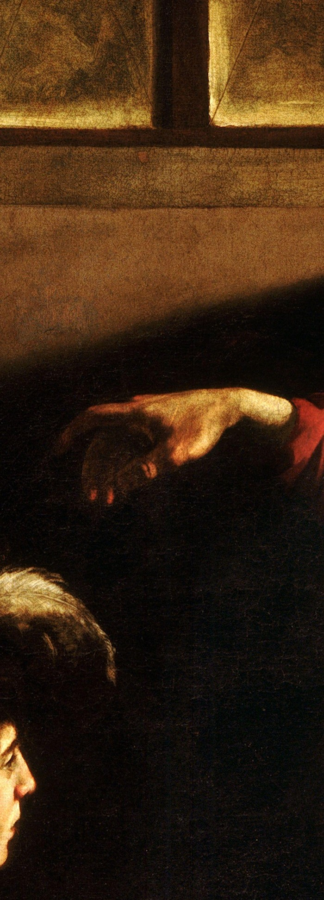
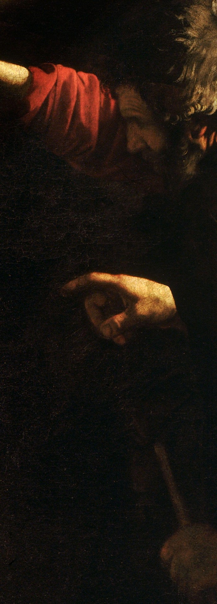
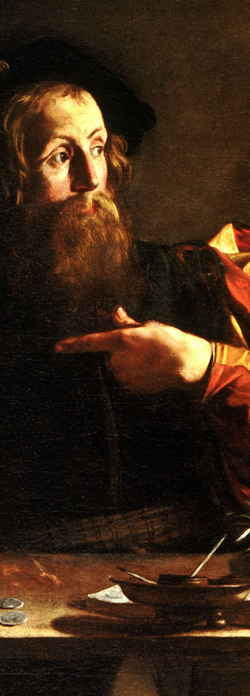
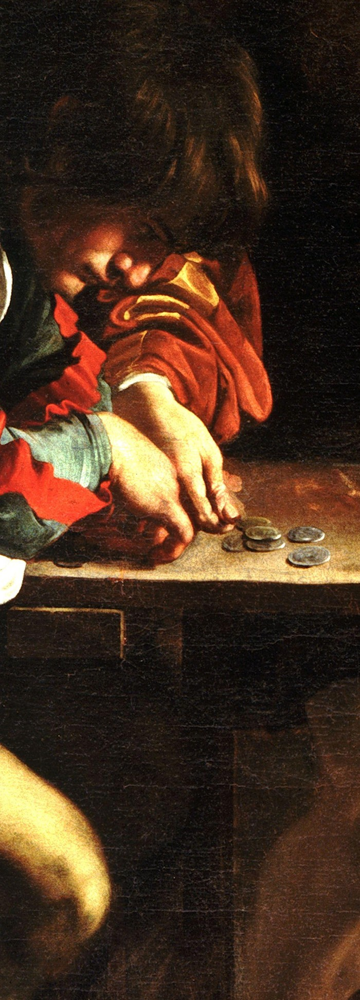
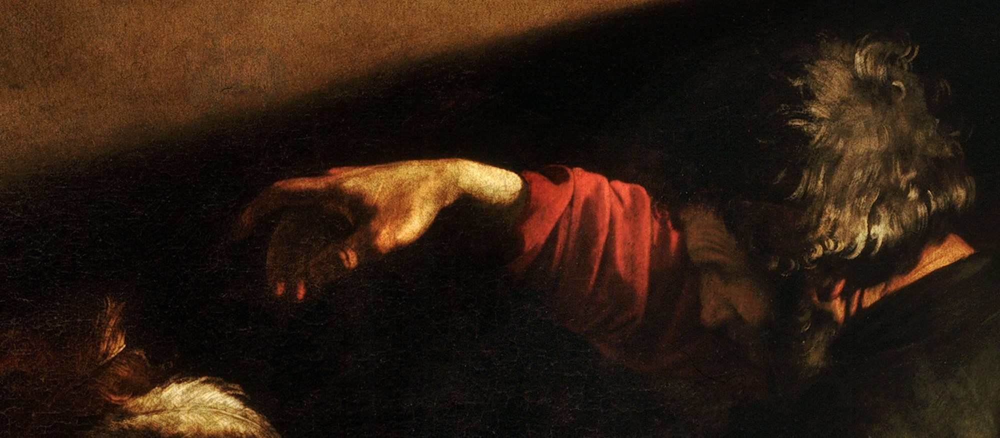
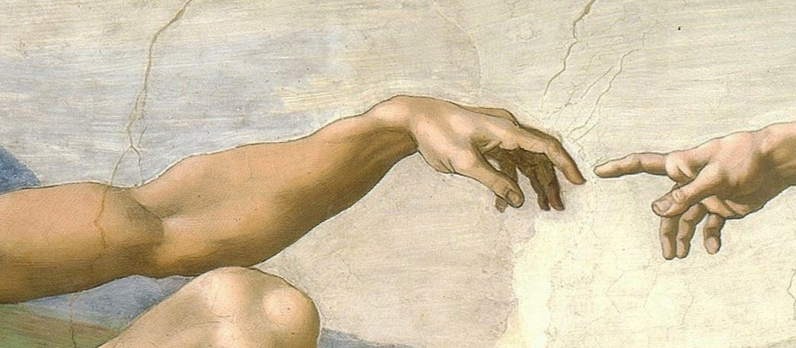
Christ's limp, reaching hand nearly mirrors Adam's on the Sistine ceiling. Adam received life. Here, Christ gives it.
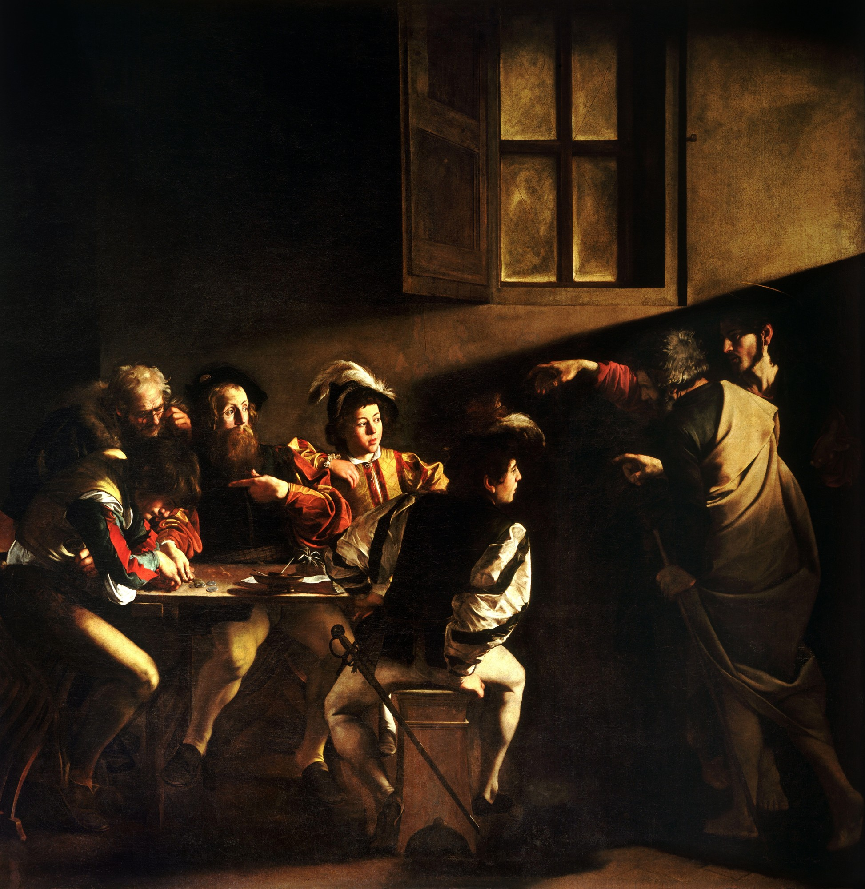
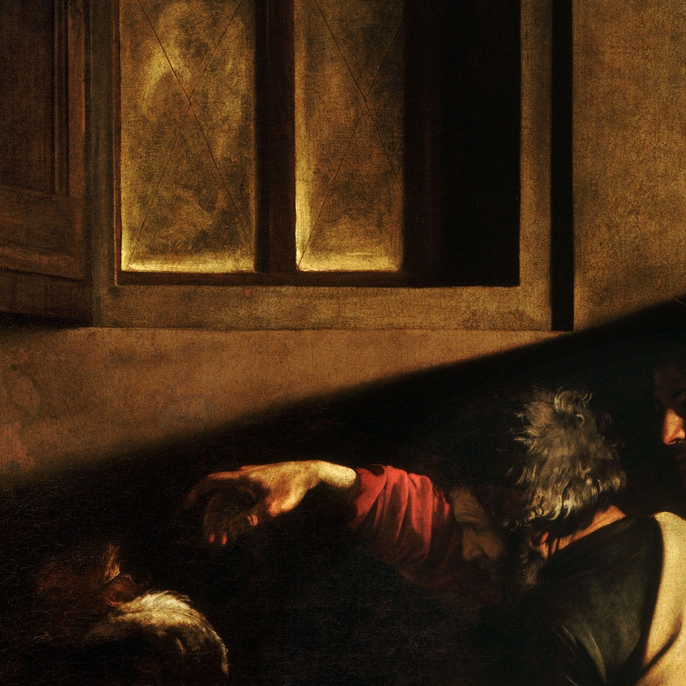
Light falls from the upper right, past Christ's hand, onto the table. In the dim chapel, the only window sits on that same side.
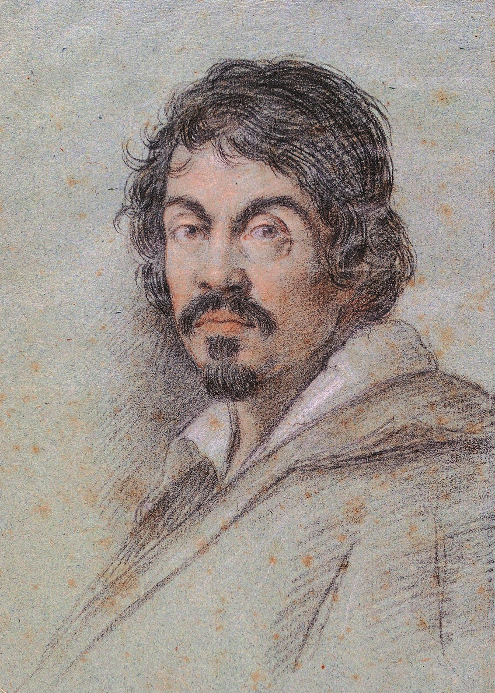
Caravaggio · Ottavio Leoni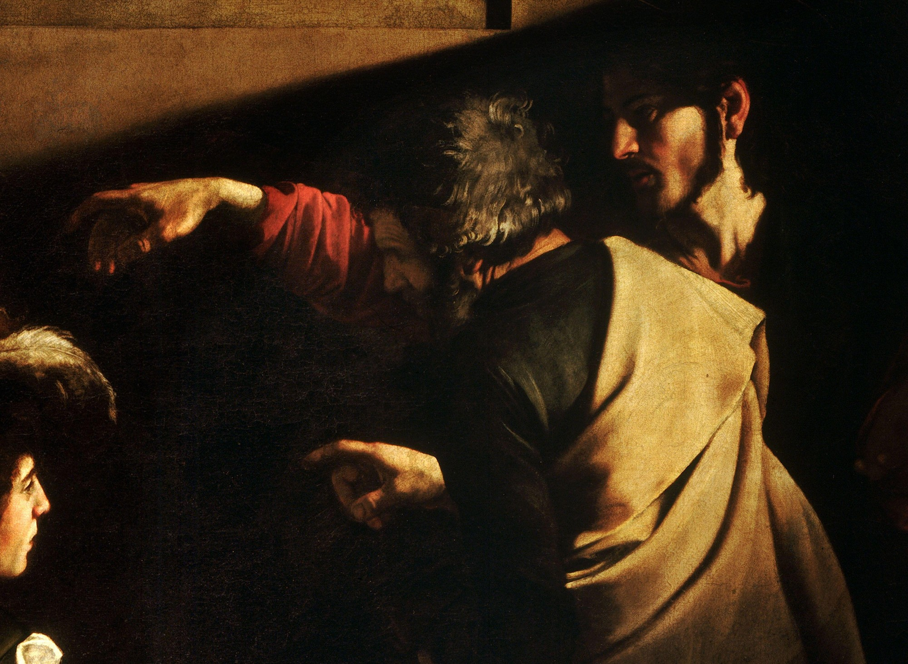
X-rays show Christ's arm was first painted higher. The man in front of him, Peter, was added later. Some historians think the patrons wanted Rome's first pope in the room.
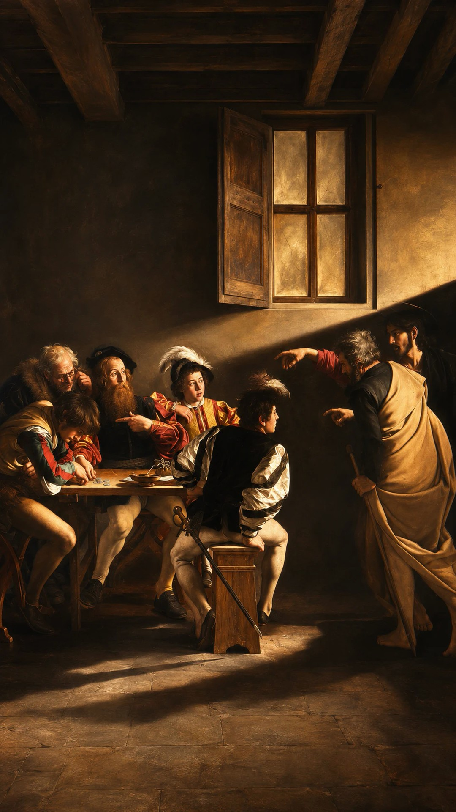
Walk into the tax office and follow the beam. Our reel is one unbroken flight.